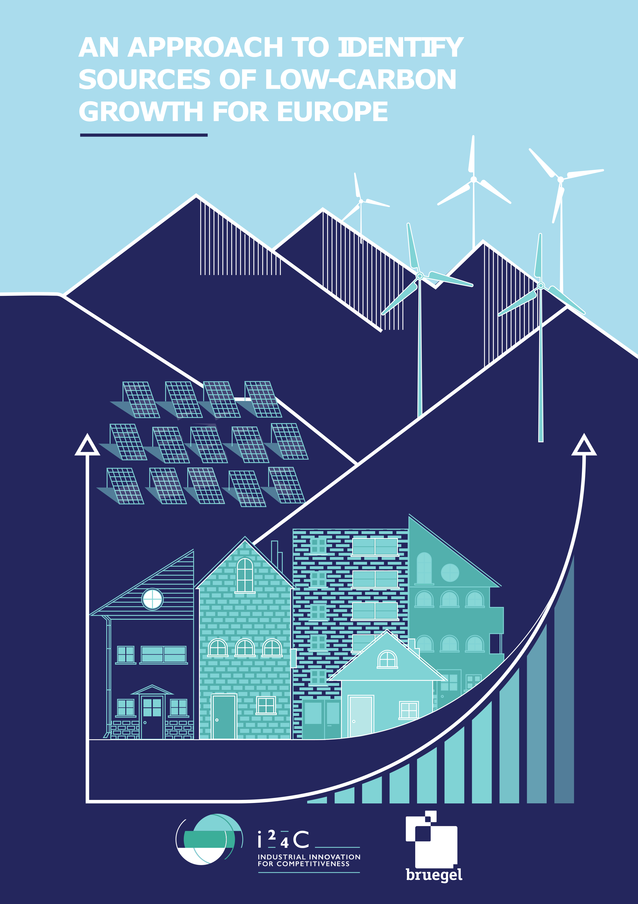

An approach to identify the sources of low-carbon growth for Europe
Georg Zachmann, Bruegel
gz@bruegel.org
Robert Kalcik, Bruegel
robert.kalcik@bruegel.org
Preface
This website serves to illustrate the findings of the policy contribution “An approach to identify the sources of low-carbon growth for Europe” (Zachmann 2016) and allows a deeper dive into the underlying data. The website is focused on presenting figures and deliberately only offers short descriptions and interpretations.

The research underlying this report has been financially supported by the European Climate Foundation’s Industrial Innovation for Competitiveness Initiative (i24c). Research assistance by Fabio Matera, Enrico Nano, Michele Peruzzi and Alexander Roth is gratefully acknowledged.